Мультиметры
В переводе с английского, название мультиметр переводится как многофункциональный прибор - многоизмеритель. В советское время мультиметры назывались АВО–метры или тестеры. Это название складывалось из первых букв единиц измерения силы тока, напряжения и сопротивления, Амперы, Вольты, Омы.
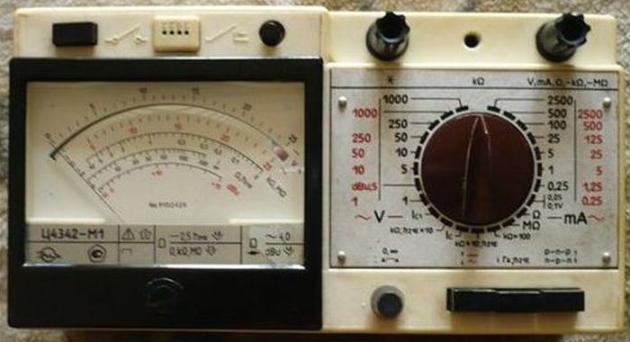
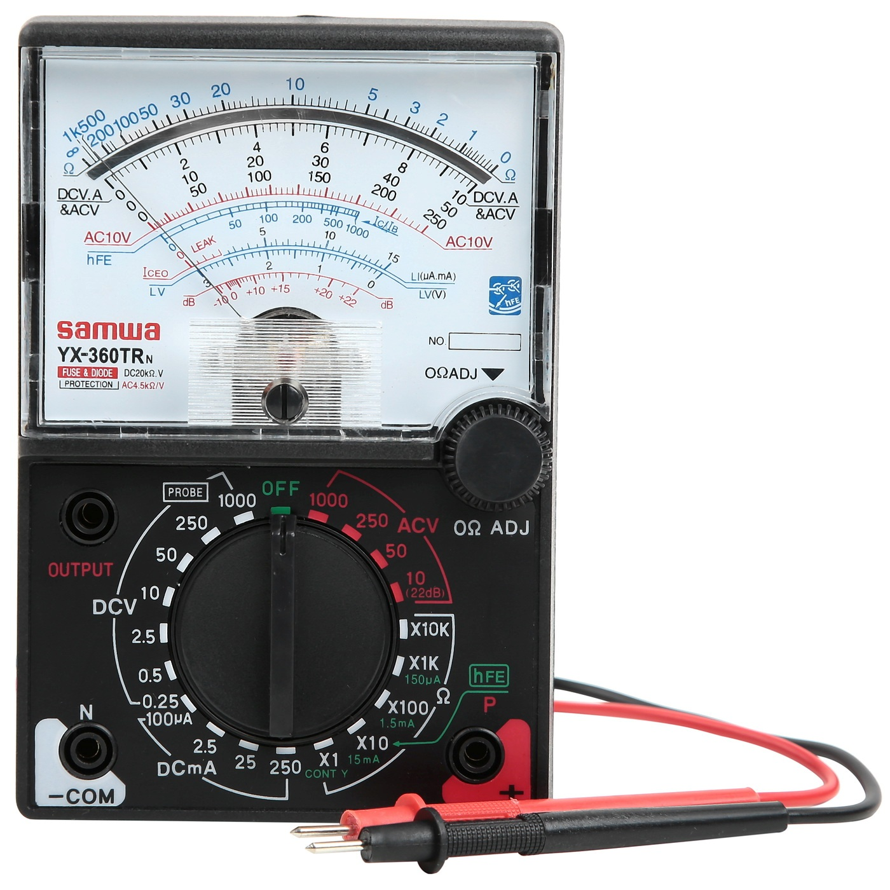
В настоящее время с помощью мультиметров можно выполнять, как вышеперечисленные измерения, так и некоторые дополнительные. Даже самый простой цифровой мультиметр DT830 (рис. 3) позволяет измерять много величин.
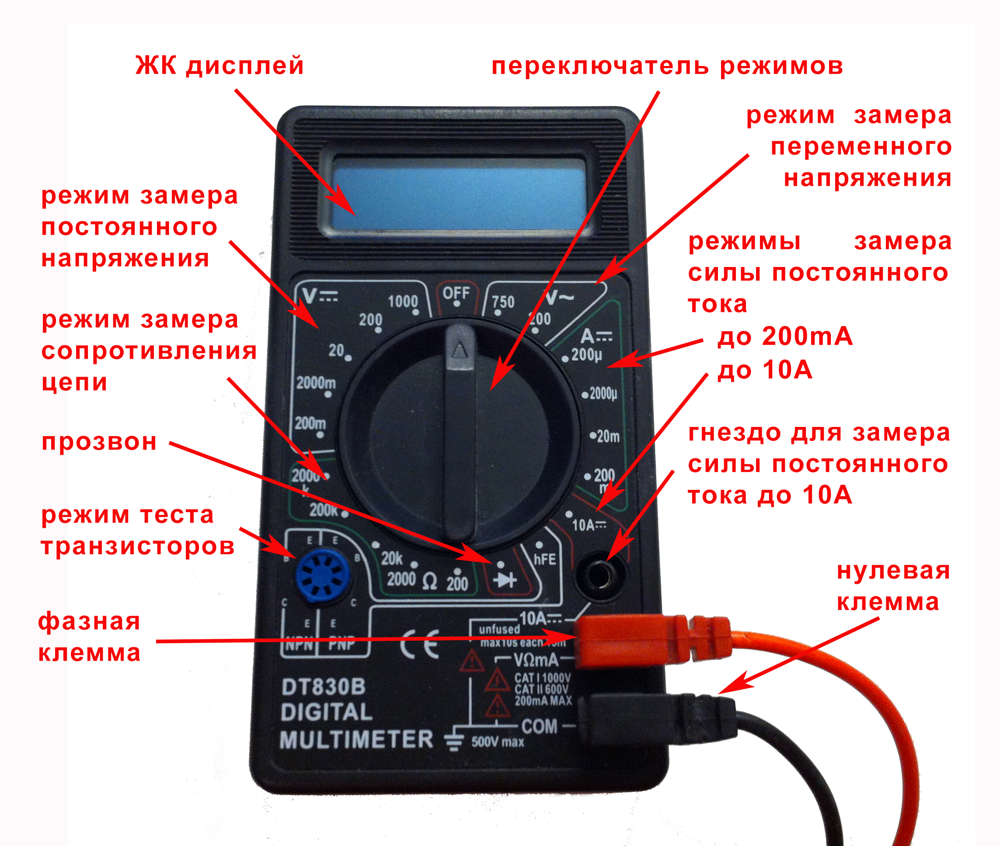
При измерении напряжения на постоянном токе, особой разницы, как подключать щупы нет. Если их подключить неправильно, то на экране просто будет значение со знаком минус.
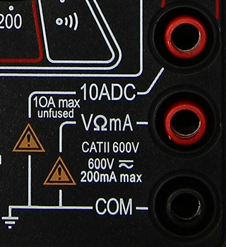
Мультиметр имеет три гнезда для подключения щупов (рис. 4) :
- 10ADC - гнездо для измерения больших токов до 10 А, подключается красный щуп. Время измерения при этом должно быть максимум несколько секунд, иначе есть риск сжечь мультиметр.
- VΩmA - гнездо для измерения всех остальных величин, кроме больших токов, подключается красный щуп.
- СОМ - гнездо для подключения черного щупа.
Практически во всех современных тестерах есть функция звуковой прозвонки. Встречаются мультиметры и без этой функции. Это очень полезная функция, позволяет проверять предохранители, при прикосновении к разным концам, если есть звуковой сигнал, то значит предохранитель цел, если нет, то сгорел. Аналогичным образом проверяются провода.
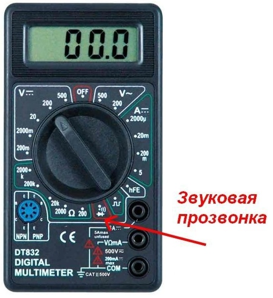
Для измерения напряжения постоянного тока переключатель ставим в в область с надписью «DCV» или «V—»(режим измерения по постоянному напряжению). В этой области есть несколько диапазонов: 200 мВ, 2000 мВ, 20 В, 200 В, 500 В (в зависимости от модели).
Выбирать диапазон следует исходя из правила: фактическое напряжение измеряемого участка не должно превышать значение заданного диапазона. Если будете проверять батарейку с напряжением в 1,5 В и выберете диапазон ниже этого значения, то на экран прибора будет выведено значение «1» или «OL» («overload»). Это означает, что достигнут предел измерений для заданного диапазона. В этом случае диапазон необходимо повысить.
Если же напряжение на участке неизвестно, то стоит выбрать самый верхний диапазон и постепенно его понижать до получения значения, отличного от «1» или «OL».
После этого щупы можно прикладывать к измеряемому участку цепи. На дисплее будет выведено значение искомого напряжения.
Так как постоянное напряжение имеет полярность, то при прикладывании к «минусу» красного щупа, а к «плюсу» — черного на дисплее будет отображаться знак «-». Он говорит о противоположной полярности подключенных щупов. Можно или проигнорировать этот знак, или поменять местами щупы.
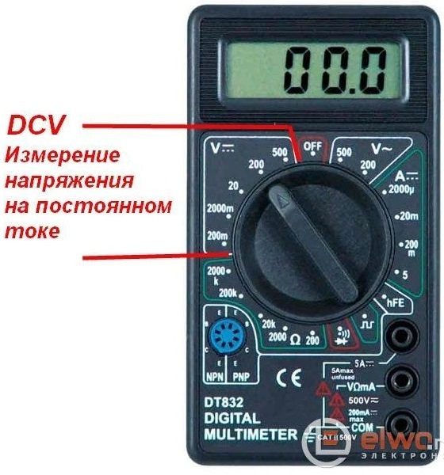
Большинство цифровых мультиметров позволяют прозванивать сопротивление от единиц Ом до 2 МОм, а более дорогие и соответственно более продвинутые до 200 МОм. Режим измерения сопротивления обозначается значком (Ω)Омега. Эта функция совершенно необходима при ремонте электронной техники, и разумеется в работе любому радиолюбителю. При проверке сопротивления, к примеру резисторов, мы выставляем, как обычно на предел измерения больший, чем номинал резистора. Если не известен номинал резистора вообще, нужно установить максимальный предел измерения на тестере, и постепенно уменьшать его, для повышения точности измерения. К примеру, если у нас резистор на 13 кОм, то правильным будет выбор предела измерения 20 кОм.
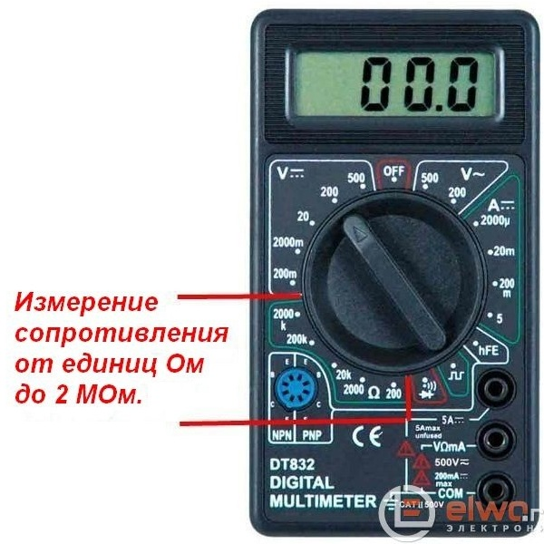
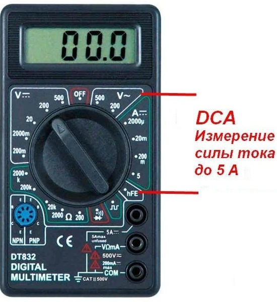
Также с помощью мультиметра можно измерять небольшие токи при настройке электронной аппаратуры. Эти измерения проводятся на постоянном токе, при выборе на тестере режима DCA. Как и при измерении любым амперметром, нужно включать в этом режиме щупы мультиметра в разрыв цепи, или говоря другими словами последовательно с нагрузкой.
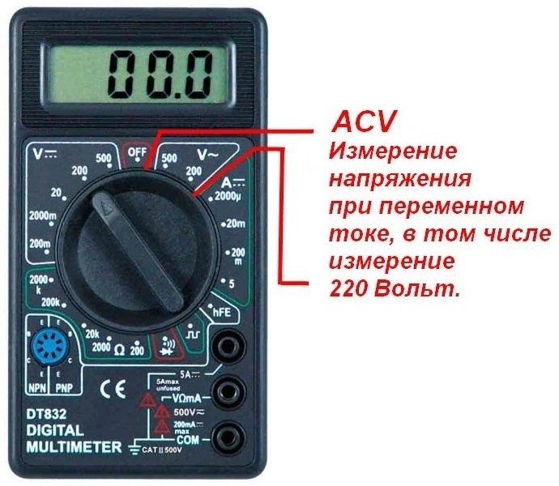
С помощью тестера можно проверить наличие напряжения в сети 220 вольт, как двухполюсным индикатором, и разумеется дополнительно узнать его величину. Для этого нужно выставить на тестере предел 500 Вольт. Это бывает полезно в частном секторе, когда при одновременном включении мощной нагрузки потребителями напряжение в сети проседает. Говоря другими словами, оно становится несколько ниже положенных 220 вольт. Почему этого не происходит в многоквартирных домах? Здесь используются на питающих потребителей подстанциях, обычно более мощные силовые трансформаторы. Если при отключении отопления, к примеру аварийном, в каждой квартире включат обогреватели, и другую мощную нагрузку, к примеру водонагреватели, нагрузка на подстанции также возрастет и если трансформатор небольшой мощности напряжение может также просесть.
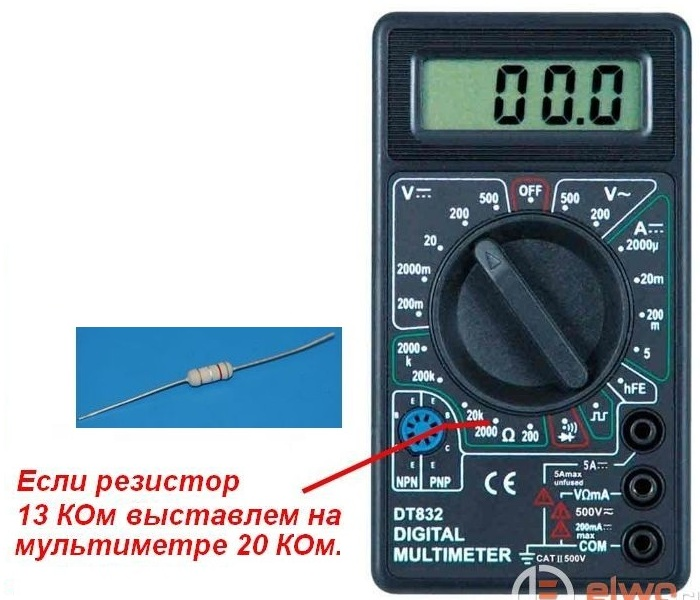
Важное правило: на мультиметре, при измерении всегда должен быть выставлен предел измерения больший, чем измеряемая величина. Это позволит сохранить тестер в сохранности. Если неизвестна точная измеряемая величина, то следует выставить на мультиметре заведомо больший предел, чем измеряемая величина. Если это измерения сетевого напряжения 220 или 380 В, то нужно выставить на мультиметре 500 В, а если измеряется напряжение на плате при ремонте, во включенном устройстве с питанием от 12 В следует выбрать предел 20 В. Если в схеме, к примеру 35 В, следует выбрать предел 200 В. Также следует быть внимательным при выборе измеряемой величины на мультиметре, если щупами подключиться к участку схемы под напряжением даже 12 В, в режиме измерения сопротивления или измерения силы тока, есть риск сжечь АЦП (аналого-цифровой преобразователь) основную микросхему в мультиметре и он придет в негодность.
Также в тестерах есть возможность подключения транзисторов с целью проверки и измерения их коэффициента усиления. В мультиметре стоит специальный разъем (рис. 11), в которую вставляются выводы транзистора в соответствии со структурой и цоколевкой.
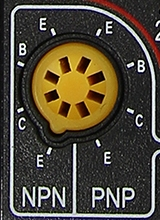
Переключатель режимов при проверке транзисторов должен быть установлен в положение «hFE»
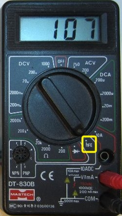
Мнигие мультиметры имеют функцию измерения температуры, с подключаемой термопарой. Подключаются щупы термопары во второе и третье сверху гнезда тестера. Недостатком термопар является невозможность мгновенно измерить температуру. Приходится ждать какое-то время, пока на экране мультиметра покажется, постепенно увеличиваясь, действительное значение температуры.
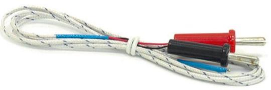
В более дорогих моделях мультиметров есть функция измерения емкости. Пределы измеряемой ёмкости от десятков пикофарад до 20 микрофарад. Они имеют специальную колодку для подключения выводов конденсаторов. На рисунке 14 колодка для измерения ёмкости находится в левой части мультиметра.
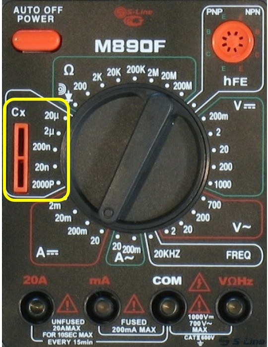
Помимо емкости, и температуры в качестве расширенных функций, некоторые модели тестеров могут измерять еще и частоту. Также в более дорогих моделях часто встречается опция, автоматическое выключение питания, через какое-то время после включения, в целях экономии заряда батареи. Для повторного включения нужно нажать на кнопку включения. Иногда такие тестеры имеют раскладную подставку для установки тестера в наклонном положении.
Также существуют мультиметры с автоматическим выбором предела измерений (рис 15). В таких тестерах достаточно выбрать ту величину, (например напряжение или силу тока), какую мы собираемся измерять, и мультиметр сам покажет нам значение с необходимой точностью.
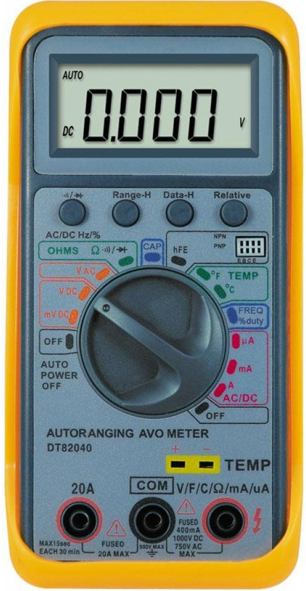
Источники:
elwo.ru - Как измерять мультиметром
zametkielectrika.ru - Как пользоваться мультиметром. Часть 1 (постоянное и переменное напряжение)
blog.eldorado.ru - Как пользоваться мультиметром: рассказывает инженер